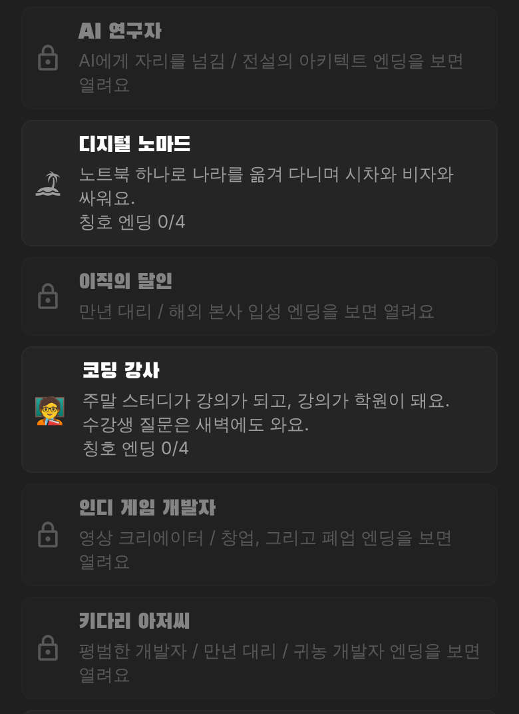
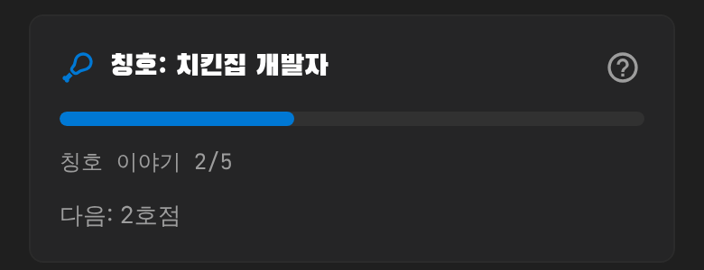
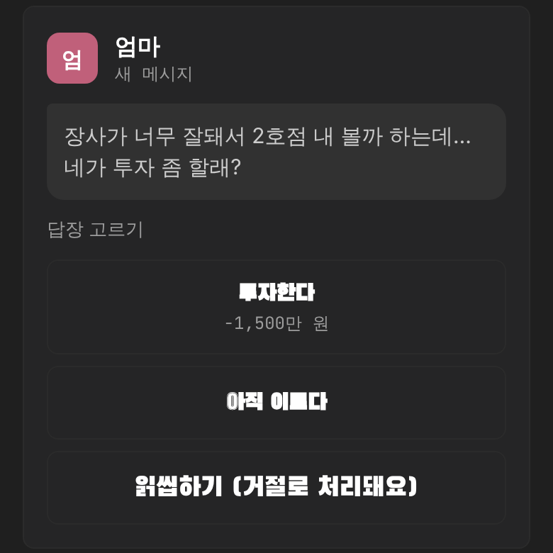

공략집 › 칭호
칭호
칭호 11개 여는 법과 칭호 엔딩 42개의 정확한 갈림길, 주차, 확률, 같이 노리기 좋은 조합과 서로 막는 조합까지
한 줄 요약
- 🏷️ 칭호는 엔딩을 보면 열리고, 커리어를 시작하기 전에 홈 탭 칭호 칸에서 1개 골라 끼워요. 끼우면 그 칭호 전용 이야기가 메신저로 와요.
- 📬 칭호 이야기는 무작위가 아니라 정해진 주차에 정해진 순서로 와요. 그래서 이 글의 표대로 답하면 거의 원하는 엔딩으로 갈 수 있어요.
- ⏱️ 이직의 달인, 코딩 강사, 인디 게임 개발자, 치킨집 개발자는 20~34주에 끝나는 빠른 칭호, 나머지는 52~64주에 끝나요. 일찍 끝나면 코인, CP는 0이지만 처음 보는 칭호 엔딩마다 에픽 카드팩을 줘요.
- 🚫 칭호를 낀 회차에는 프리랜서 제안이 절대 안 와요. 칭호 이야기 메시지를 읽씹하면 그 회차 이야기는 끝이에요.
칭호, 이렇게 돌아가요 🧭#
칭호는 다음 회차에 어떤 이야기를 겪을지 고르는 장치예요. 칭호마다 전용 메시지 이야기가 있고, 답에 따라 칭호 전용 엔딩으로 이어지거든요. 처음엔 다 잠겨 있고, 아래 표의 엔딩을 한 번이라도 보면 열려요.
- 엔딩으로 칭호 열기칭호마다 여는 엔딩이 1~3개 있어요. 그중 하나만 도감에 있으면 열려요. 잠긴 칭호에는 ○○ 엔딩을 보면 열려요라고 나와요.
- 회차 시작 전에 끼우기홈 탭(커리어를 시작하기 전 화면)의 칭호 칸에서 칭호 없음 또는 칭호 1개를 골라요. 고른 칭호는 다음 회차에도 그대로 끼워져 있어요.
- 메신저로 이야기 받기회차 중 홈 탭에 칭호 카드(칭호: 이름, 칭호 이야기 n/5, 다음: …)가 생겨요. 조건이 된 이야기 메시지는 그 주에 전부, 한 번씩 와요.
- 답해서 엔딩 고르기엔딩으로 이어지는 답을 고르면 그 자리에서 회차가 끝나요. 엔딩을 원하지 않으면 다른 답을 고르고 계속 가면 돼요.


꼭 알아 둘 규칙 7가지#
| 규칙 | 내용 |
|---|---|
| 한 회차 1칭호 | 칭호는 회차마다 1개만 끼워요. 회차 중간에는 못 바꿔요. |
| 정해진 일정 | 칭호 메시지는 몇 주차부터 + 앞에서 어떤 답을 했는지가 맞으면 그 주에 반드시 와요. 운으로 안 오는 일은 없어요. |
| 답해야 넘어감 | 칭호 메시지는 전부 답해야 주가 넘어가는 중요 메시지예요. |
| 읽씹 = 이야기 끝 | 읽씹하기를 누르거나 이야기를 접는 답을 고르면 그 회차 칭호 이야기는 다시 안 와요. 회차는 그대로 계속돼요. |
| 확률은 순수 운 | 칭호 이야기의 확률 답은 장비, 행운으로 안 바뀌어요. 이 글에 적힌 확률 그대로예요. |
| 돈이 드는 답 | 잔고가 모자라면 돈이 부족해요로 그 답을 못 골라요(예: 2호점 1,500만 원, 퇴사 2,000만 원). |
| 이직, 퇴사해도 계속 | 회사를 옮겨도, 김 선배가 퇴사해도, 창업가가 회사를 그만둬도 칭호 이야기는 계속 와요. |
칭호 엔딩으로 끝나면 뭘 받아요?#
| 항목 | 칭호 엔딩으로 일찍 끝난 회차 |
|---|---|
| 코인, CP | 0 (100주를 끝까지 마친 회차만 받아요) |
| 처음 보는 칭호 엔딩 | 에픽 카드팩 1개 (기본 엔딩은 레어 팩) |
| 도감 엔딩 보상 | 일반 팩 1개. 확률 엔딩(빅테크 입성, 라이선스 전쟁, 바운티 백만장자, 최우수 논문상, 원격팀 리더, 인디 게임 대박)은 레어 팩, 톱 개발 크리에이터는 에픽 팩, 상장은 전설 팩 |
| 회차 수(완주) | 완주로 세요. 다만 일일 회차 퀘스트와 커밋 XP는 100주 + 10분 이상이 필요해서 없어요 |
| 도중에 엔딩 충족!한 엔딩 | 안 남아요. 100주 전에 끝난 회차는 그 칭호 엔딩 하나만 도감에 들어가요 |
이거 모르면 손해
회차 도중에 엔딩 충족!이 뜬 엔딩(예: 회사 사가 결말, 해외 본사 입성)은 100주를 마쳐야 도감에 남아요. 칭호 엔딩 답을 누르는 순간 회차가 끝나서 그 엔딩들은 날아가요. 이미 뭔가 충족했다면, 칭호 엔딩은 다음 회차로 미루고 이번엔 엔딩 답을 거절하세요.
칭호마다 칭호 엔딩은 보통 4개예요. 연쇄 창업가는 6개, 키다리 아저씨는 0개(은서 엔딩 2개는 일반 엔딩 쪽)예요. 칭호 엔딩은 모두 합쳐 42개이고, 숨김 엔딩은 없어요.
칭호 11개 여는 법 🔓#
| 칭호 | 여는 엔딩 (하나만 보면 돼요) | 엔딩 수 | 끝나는 주차 |
|---|---|---|---|
| 🍗 치킨집 개발자 | 치킨집 사장 / 귀농 개발자 | 4 | 20~30주 |
| 🏝 디지털 노마드 | 디지털 노마드 / 워라밸 마스터 / 귀농 개발자 | 4 | 54~60주 |
| 👨🏫 코딩 강사 | 워라밸 마스터 / 평범한 개발자 | 4 | 24~32주 |
| 🧳 이직의 달인 | 만년 대리 / 해외 본사 입성 | 4 | 22~34주 |
| 🕶 화이트해커 | 해외 본사 입성 / 만년 대리 | 4 | 56~64주 |
| 🎩 키다리 아저씨 | 평범한 개발자 / 만년 대리 / 귀농 개발자 | 0 (은서 엔딩 2) | 100주 판정 |
| 🤖 AI 연구자 | AI에게 자리를 넘김 / 전설의 아키텍트 | 4 | 52~62주 |
| 📣 개발 인플루언서 | 영상 크리에이터 | 4 | 54~64주 |
| 🎮 인디 게임 개발자 | 영상 크리에이터 / 창업, 그리고 폐업 | 4 | 22~34주 |
| 🌳 오픈소스 메인테이너 | 전설의 아키텍트 / CTO 취임 | 4 | 52~62주 |
| 🚀 연쇄 창업가 | 창업 대박 / 창업, 그리고 폐업 | 6 | 20주 퇴사 후 언제든 ~ 100주 |
여기선 어떻게 하면 제일 빨리 열리나만 볼게요.
첫 칭호, 이렇게 열면 빨라요 🏃#
새 계정이라면 일정 하나로 결과가 아주 깔끔하게 갈려요(티켓 매주 S, 평가 수락).
| 새 계정 일정 | 결과 | 열리는 칭호 |
|---|---|---|
| 기본 일정 그대로 | 100% 번아웃 3번 → 치킨집 사장 (가운데값 35주) | 치킨집 개발자 |
| 점심, 업무, 업무, 업무, 공부, 휴식 | 100% 번아웃 0번, 과장으로 100주 → 워라밸 마스터 | 디지털 노마드, 코딩 강사 |
- 🍗 치킨집 개발자는 번아웃 3번만 하면 열려서 사실상 첫 칭호예요. 그리고 치킨집 개발자 자체가 20~30주에 끝나는 빠른 칭호라 엔딩 4개 모으기도 쉬워요.
- 😌 워라밸 마스터(주간 평균 스트레스 25 이하 + 과장 이상) 한 번이면 노마드와 코딩 강사가 같이 열려요.
- 💺 만년 대리(100주에 대리 이하)는 화이트해커, 이직의 달인, 키다리 아저씨를 한 번에 열어 줘요. 3개를 여는 엔딩은 이것뿐이에요.
- 👨🌾 귀농 개발자(100주에 체력 85 이상, 스트레스 20 이하, 돈 1,000만 원 미만)도 노마드, 키다리 아저씨, 치킨집 3개를 열어요.
- 🧠 AI에게 자리를 넘김(100주에 코딩력 30 미만)은 AI 연구자를 열어요. 일부러 코딩을 안 올리면 돼요.
조기 종료 칭호, 퇴사 칭호 정리 🚪#
- 조기 종료 칭호: 치킨집 개발자(20~30주), 이직의 달인(22~34주), 인디 게임 개발자(22~34주), 코딩 강사(24~32주). 일부러 짧게 만든 칭호라 빠른 도감 수집용이에요.
- 퇴사 칭호: 연쇄 창업가 하나예요. 강의에 올인, 이직한다, 연구소를 차린다 같은 다른 칭호 엔딩은 이야기 속 퇴사일 뿐, 고르는 순간 회차가 끝나요.
- 끝까지 가는 칭호: 키다리 아저씨는 칭호 엔딩이 없어서 언제나 100주까지 가요.



자주 묻는 질문#
- 칭호를 바꾸고 싶은데 회차 중엔 안 돼요?
- 네, 회차를 시작할 때 끼운 칭호로 끝까지 가요. 바꾸려면 다음 회차를 시작하기 전 홈 탭 칭호 칸에서 고르세요.
- 칭호 메시지가 안 와요.
- 앞 단계 답이 그 메시지의 조건을 안 켰거나, 접는 답, 읽씹으로 이야기가 끝났을 가능성이 커요. 이 글의 표에서 (○○ 루트) 표시를 확인하세요. 칭호 메시지는 조건만 맞으면 그 주에 반드시 와요.
- 확률 답, 장비로 올릴 수 있어요?
- 아니요. 칭호 이야기의 확률은 장비, 행운과 상관없이 고정이에요.
- 칭호 엔딩으로 끝냈는데 코인이 0이에요.
- 100주를 마친 회차만 코인, CP를 줘요. 대신 처음 보는 칭호 엔딩마다 에픽 카드팩, 도감에서 엔딩 보상 팩을 또 받아요.
- 칭호 진행 바가 5/5가 안 됐는데 엔딩이 나왔어요.
- 정상이에요. 마일스톤 중 몇 개(정식 출시, 가맹 문의, 학원 제안 등)는 엔딩 답으로 바로 끝나서 진행 바에 안 찍혀요.
- 칭호를 끼고 프리랜서가 되고 싶어요.
- 안 돼요. 프리랜서 제안은 칭호 없는 회차에서만 24주차 이후 평판 70이 되면 와요.
- 칭호 엔딩도 숨김 엔딩이 있어요?
- 따로 숨겨진 칭호 엔딩은 없어요. 다만 도감에서 아직 못 본 엔딩은 이름 대신 ???로 나와요. 엔딩을 어떻게 여는지는 상점의 엔딩 비밀 노트가 있어야 도감에 보여요.